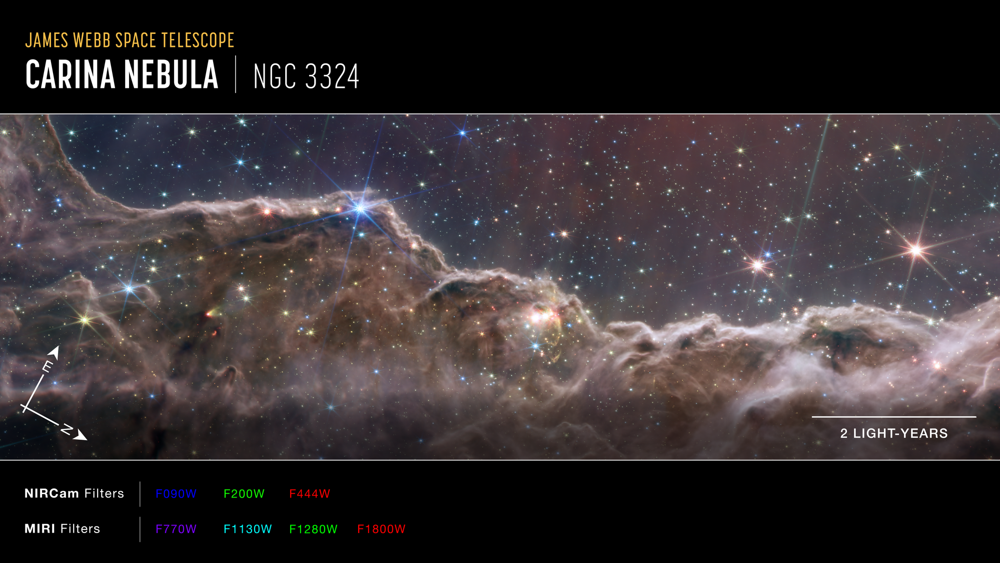

The edge of a giant, gaseous cavity within NGC 3324, located roughly 7,600 light-years away.
Sculpted by Starlight
What looks like a craggy mountain range on a moonlit evening is actually the edge of a giant, gaseous cavity within a star-forming region called NGC 3324 in the Carina Nebula. The tallest "peaks" in this image are roughly 7 light-years high.
This cavernous area has been carved from the nebula by the intense ultraviolet radiation and stellar winds from extremely massive, hot, young stars located just above the area shown in the image. The blistering radiation from these stars is slowly eroding the nebula's wall, a process known as photoevaporation. The "steam" rising from the celestial mountains is actually hot, ionized gas and dust streaming away from the nebula.

The Technology Behind the Image
NIRCam (Near-Infrared Camera)
Visible light telescopes (like Hubble) are blocked by cosmic dust. Webb’s NIRCam peers *through* this dust, revealing hundreds of previously hidden infant stars and even background galaxies. In NIRCam's view, we can clearly see the "protostellar jets" (gold-colored streaks) shooting out from young stars that are still actively gathering mass.
MIRI (Mid-Infrared Instrument)
When viewed with Webb's Mid-Infrared Instrument, the young stars fade, and the glowing dust takes center stage. MIRI is sensitive to cooler temperatures, allowing it to highlight the complex hydrocarbons and thick dust clouds where planets might eventually form around these young stars.
Decoding Star Birth
The Cosmic Cliffs provide a rare window into a very brief, highly active phase of star formation. Because star birth only takes about 50,000 to 100,000 years (a blink of an eye in cosmic time), capturing it in action is incredibly difficult.
- Triggered Star Formation: The intense pressure from the stellar winds of massive stars compresses the surrounding gas. As the gas becomes denser, it eventually collapses under its own gravity, triggering the birth of *new* stars along the ridge.
- Halting Star Formation: Conversely, if the radiation is too intense, it can blow away the gas completely, destroying the raw materials needed for new stars. Webb helps astronomers understand this delicate balance.
- Protostellar Jets: Webb's high resolution allowed scientists to catalog numerous jets of material being expelled by "baby" stars, which helps regulate how much mass a star ultimately accumulates.